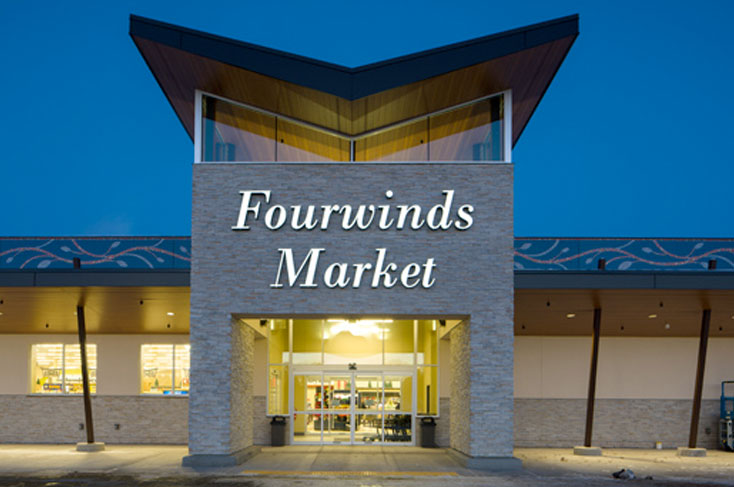

| Popular Places around the Lake | |||
|---|---|---|---|
| Name | Location | Description | Picture |
| Whiskey Joe's | Highway 70, 1 mile past the round-a-bout in Siren |
Great weekend destination! Amazing food, GREAT drinks, and live music to keep you going all night! |

|
| The Co-Op | 15 Minutes West of Siren |
A destination for on the way through, or on the way home. All sorts of fresh dairy related products (including cheese curds and pizza). Also has some of the best Ice Cream around! |
|
| FourWinds Market | 1 Mile North of Siren |
Recently located in town, they moved a mile up the road, increased capcity, and is now the number one spot of anything you might need. |
 |
| Burnett County Airport | Highway 70 right past the round-a-bout in Siren |
While it is a smaller air strip, there is still plenty of activities. Best of which being the air show that happens once a year in the summer! |
|
| Clam Lake Siren, Wisconsin |
|||